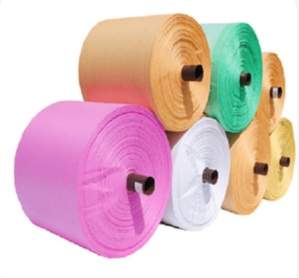
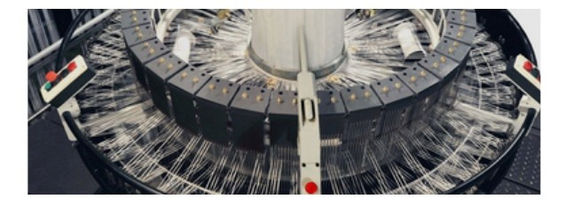
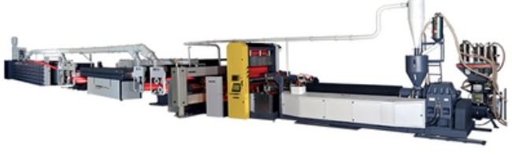
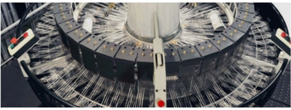
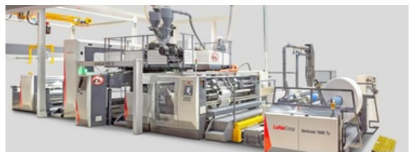
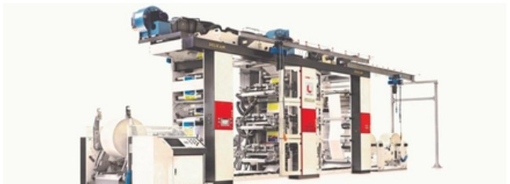
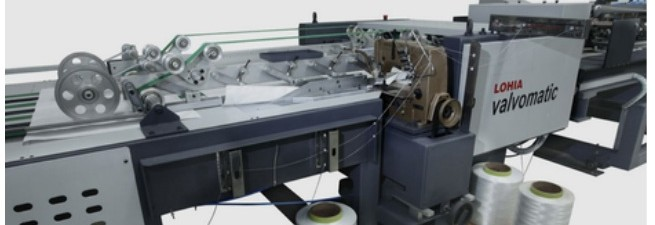
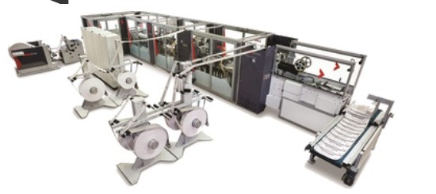

JAMMU, INDIA SINCE 1994
Packaging for
what comes next.
HDPE and PP woven fabrics and bags, made with care, experience and modern manufacturing technology.

A trusted manufacturing journey
Experience in every
weave and stitch.
Jain Poly Fab’s journey began in 1994. In 2005, the business established JK Poly Packs for HDPE and PP bags and fabrics, then grew its capability with a modernized manufacturing unit in Jammu.
Today, we produce woven fabrics and bags for varied packaging needs, combining capable machinery with in-house quality testing and a practical, customer-focused approach.
See how we make it ↗1994Manufacturing journey begins
2005JK Poly Packs established
3 lakh+Bags per day capacity
Made in Jammu for customers across essential industries.
Our products
Made for the job.
Useful, dependable woven packaging for a wide range of applications.
Manufacturing
Built around precision.
Modern machinery supports every stage, from tape and fabric to finished bags.

01
Tape extrusion line
Lohia Duotec lines produce PP and HDPE tapes for woven, knitted and jumbo bags.

02
Circular looms
Weaving tubular or flat PP and HDPE fabrics for end use.

03
Extrusion coating
Precision coating for tubular or flat woven fabric.

04
Prismaflex printing
High-speed roll-to-roll flexographic printing for fabric and bags.

05
Valvomatic 40
Production of stitched valve-type bags from tubular fabric.

06
Blokomatic
Converts coated PP fabric into block-bottom valve bags.
Quality assurance
Quality checked
at every stage.
Quality guides our work from procurement through manufacturing and delivery. Our in-house testing laboratory and technical staff help maintain consistent product quality.
- Superior-grade polymers and additive materials
- Standardized testing by technical staff
- Quality control throughout production
Industries served
Packaging for
essential work.
CementSugarFertilizersConstructionIndustrial packaging
Contact
Let’s talk packaging.
Share your requirement with our team and we’ll be in touch.
FACTORY
Lane No. 4, Opposite Vectus Industries,
SIDCO Industrial Complex, Bari Brahmana,
Jammu – 181133, Jammu & Kashmir
HEAD OFFICE
111/1, Trikuta Nagar, Near Post Office,
Jammu – 180012, Jammu & Kashmir
GENERAL ENQUIRIESjainpolyfab12@gmail.com